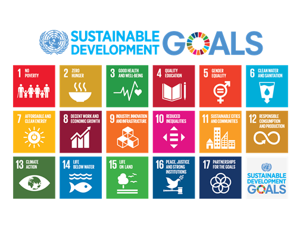
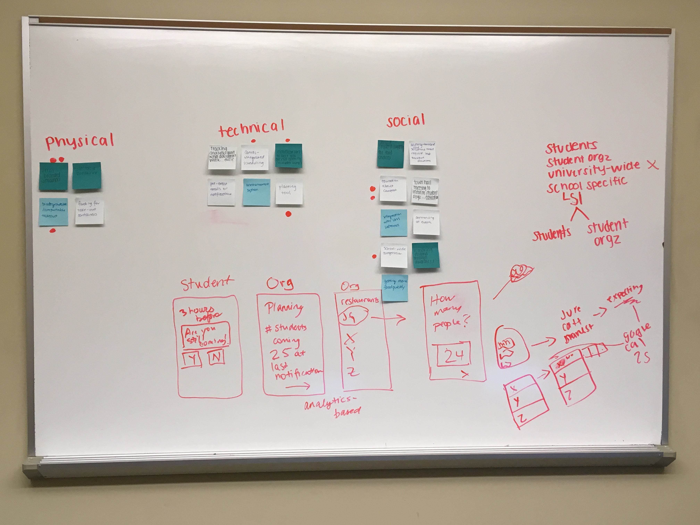

Format
Over the course of five months, students work in multidisciplinary teams to create solutions to major social problems. Each team chooses to tackle a challenge related to the UN Sustainable Development Goals. The competition culminates in a final presentation and pitch.
My Role
Researcher and Designer
The Challenge
Combat food waste on campus, working toward the UN Sustainable Development Goal of Sustainable Cities and Communities.
Problem Space
To best address this challenge, we first identified key players and environmental conditions that impact the problem space. We created the pictured ecosystem map while exploring the issues around food waste, and we were able to compile a list of potential interviewees from this process to gather more information about our focus area.
Interviews
My team conducted a series of interviews with student organizations, dining services, and other stakeholders to identify themes within our problem space. Based on these interviews, we found that inaccurate headcount and food transportation challenges were major contributors to campus food waste. Some students we spoke with mentioned stigma related to food insecurity as a barrier to taking post-event leftovers.
Pictured is the outcome of a brainstorm session based on the data we collected.
